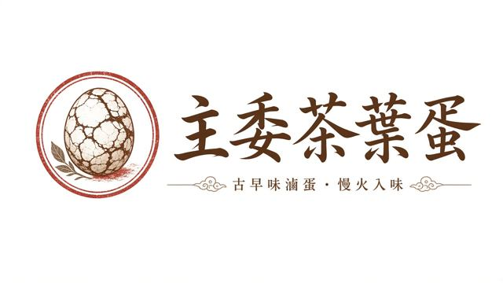

主委茶葉蛋
購物車
0
主委茶葉蛋
主委掛保證
古早味滷蛋．慢火入味
立即選購
每週現滷
剝殼即食
冷藏直送
獨立真空包
小木的爸爸是廟裡的主委，這是他做來賣的茶葉蛋。
商品（原味）
※ 價格暫定，含運組合價
配送與保存
只走低溫宅配：黑貓／新竹物流
每週二、四出貨
收到請冷藏，最多 10 天
下單
合計（含運）：NT$
0
姓名
手機
收件地址
物流
黑貓宅急便
新竹物流
出貨日
最近的週二
最近的週四
付款
銀行轉帳
LINE Pay
備註
我了解易腐食品不適用 7 天鑑賞期
送出訂單（示範）
共
0
件 NT$
0
去下單